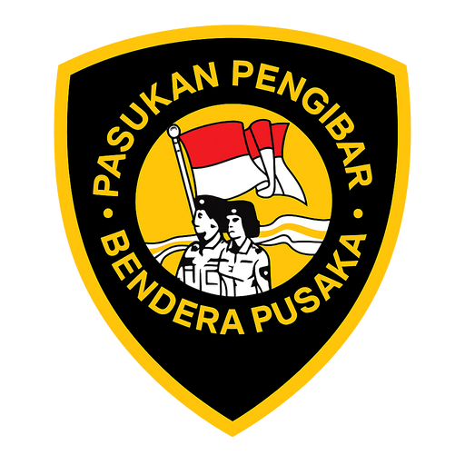

PASKIBRA PADANG TUALANG
Kecamatan Padang Tualang

Membentuk generasi muda Kecamatan Padang Tualang yang tangguh, berkarakter, berjiwa nasionalisme tinggi, disiplin, serta siap menjadi kebanggaan daerah dan bangsa Indonesia.
Pengunjung
Angkatan Paskibra
Semangat Nasionalisme
Karakter Utama
Kecamatan Kebanggaan
Organisasi pembinaan generasi muda yang fokus terhadap kedisiplinan, kepemimpinan, tanggung jawab, dan semangat cinta tanah air.

Semangat • Disiplin • Nasionalisme
.png)
Bapak CAMAT PADANG TUALANG TAHUN 2022
Paskibra Kecamatan Padang Tualang hadir sebagai wadah pembinaan pelajar untuk menciptakan generasi muda yang memiliki karakter kuat, sikap disiplin, tanggung jawab, dan loyalitas tinggi terhadap bangsa.
Melalui latihan rutin, pembinaan fisik dan mental, serta kegiatan kepemimpinan, anggota Paskibra dibentuk menjadi pribadi yang tangguh, percaya diri, dan siap menjadi teladan.
Berbagai kegiatan pembinaan untuk meningkatkan kedisiplinan, kekompakan, kepemimpinan, dan rasa cinta tanah air.

Pembinaan baris berbaris untuk melatih disiplin, kekompakan, dan ketegasan anggota.
Meningkatkan kekuatan mental dan fisik agar anggota lebih tangguh dan siap bertugas.
Membentuk karakter pemimpin muda yang bertanggung jawab dan berintegritas.
Berpartisipasi dalam kegiatan pengibaran bendera dan upacara resmi tingkat kecamatan.